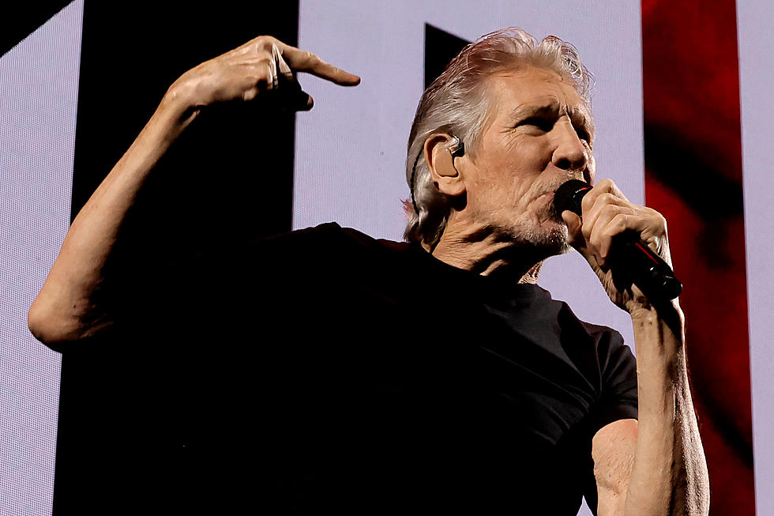

Pink Floyd Catalog Sale Reportedly Threatened By Waters' Comments
Recent explosive comments from Roger Waters have reportedly held up negotiations of Pink Floyd’s catalog sale. Variety reports that the band has been quietly shopping their “recorded-music catalog and other assets for several months, seeking as much as $500 million.” These statements from Waters may have have led potential buyers to question the value of such a deal. He has always been outspoken and opinionated regarding world politics, but an interview Rolling Stone seems to have escalated things to another level. Among his many opinions, Waters railed against the mainstream media, calling it “western propaganda,” described alleged Russian war crimes in Ukraine as “lies, lies, lies” and labelled the United States as “the most evil of all by a factor of at least 10 times.” Of course, these comments aren’t the only thing influencing a Pink Floyd catalog sale. Variety’s sources noted that “various considerations, including tax issues, rising interest rates, the sinking value of the British pound, global recession concerns and the prospect of getting an even bigger price, have delayed the [sale] process.” Still, considering how classic-rock catalogs have become big business – Bob Dylan, Neil Young, Journey and Stevie Nicks are just some of the acts who’ve cashed in on deals in recent years – it seems safe to assume that Pink Floyd would have no shortage of suitors, under normal circumstances. Waters is also only one of the principal parties involved in a potential catalog sale. Nick Mason, David Gilmour and the estate of late keyboardist Richard Wright would also have a say in any deal that is ultimately struck. As the most prominent and vocal member of Pink Floyd, however, Waters’ actions undoubtedly reflect upon his former group. His comments may be causing prospective buyers to pause, potentially lowering the price they’re willing to pay, or even pulling out all together, according to Variety. The report noted that at least one potential buyer was considering a retraction of their offer because of Waters’ comments. “The other band members must be furious,” a source added.